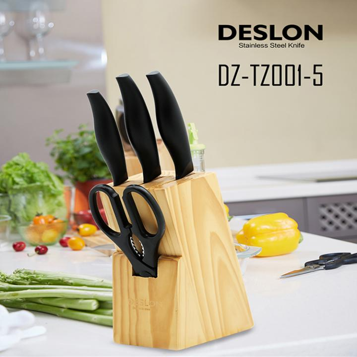
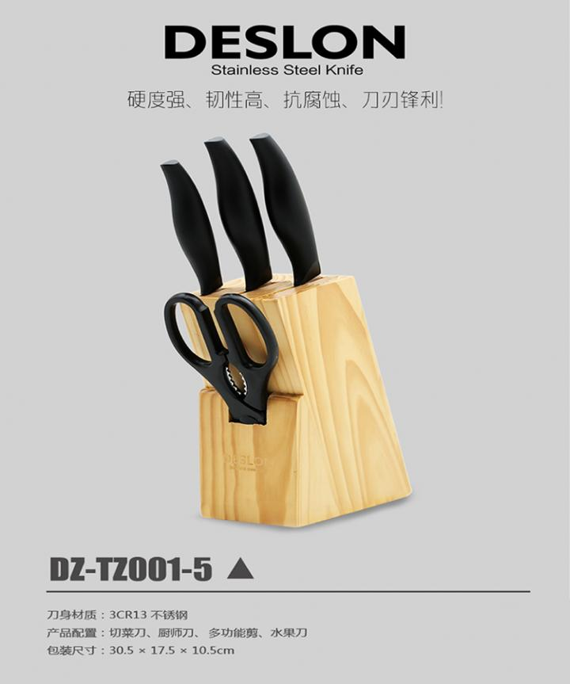
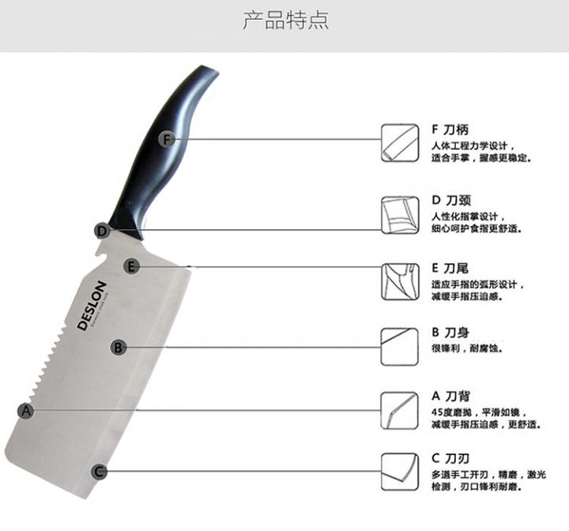
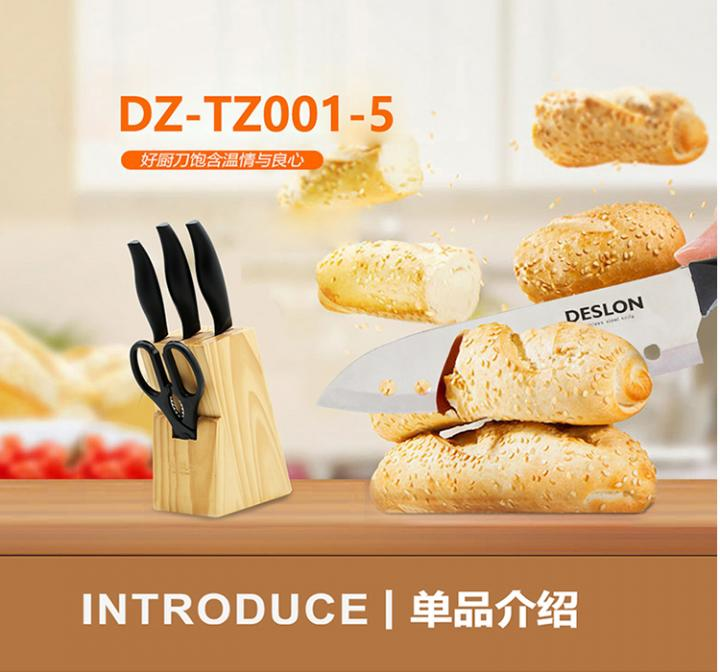
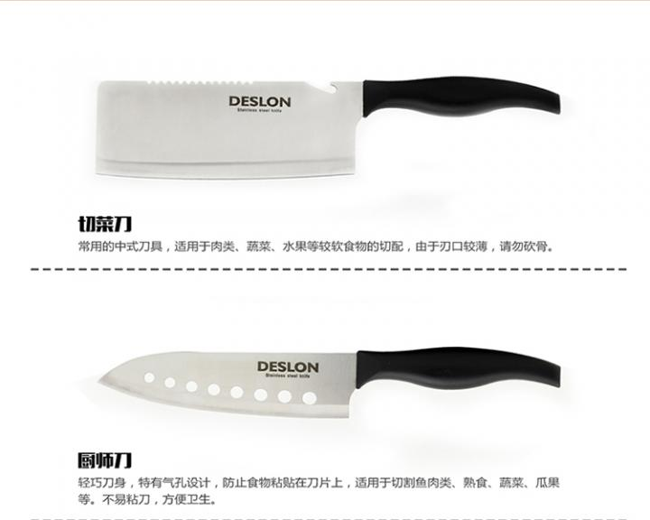
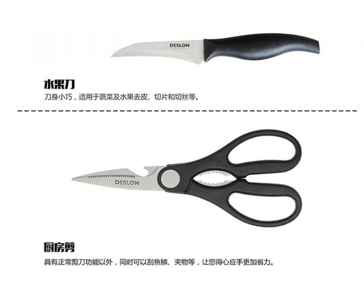
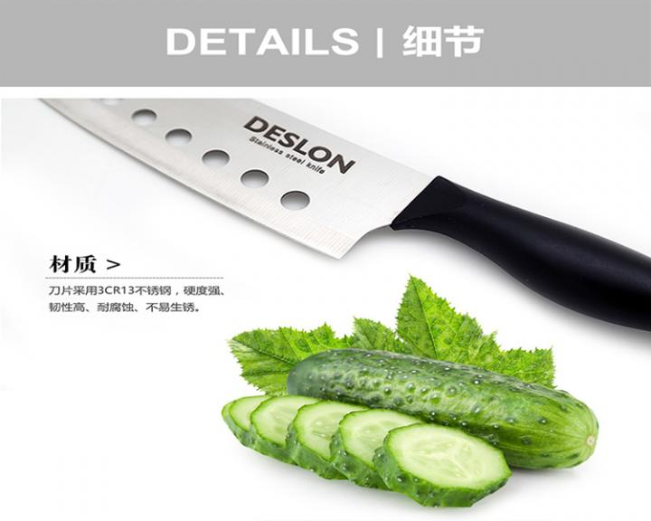
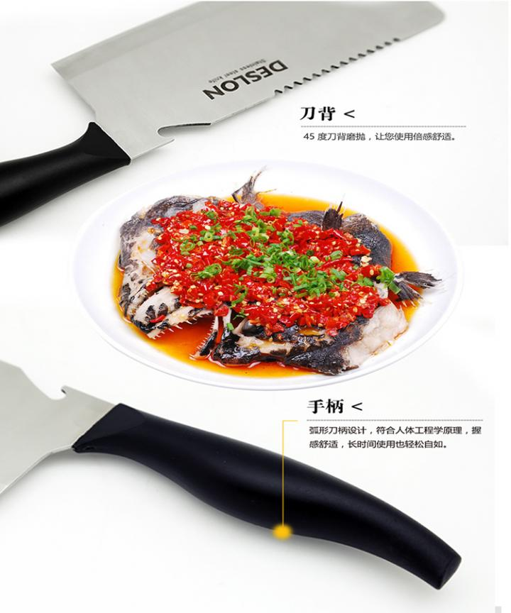
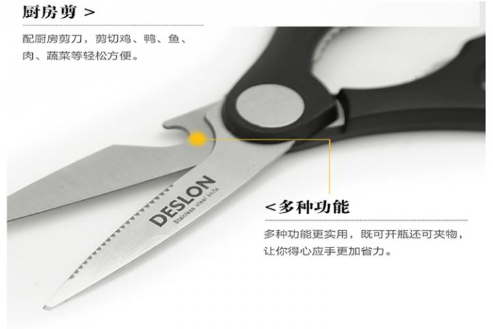
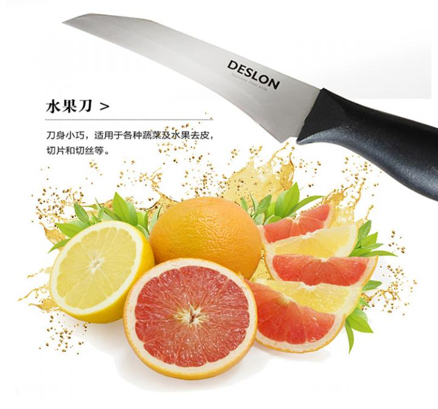

德世朗经典刀具套装
【品鉴记录】
一把刀的世界，再也不会那么冰冷，德世朗赋予它快乐、生命、艺术的哲学，让简单不再重复，让快乐远离繁杂。
记忆里，厨房刀具的世界，总有一丝冰冷，然而美味的世界却与得力的刀具难舍难分，他们是美味料理的第一元素，一把刀的品质，决胜一种食材的健康与品位。品质与品位，一直牵引着德世朗刀具的理想。拒绝平庸，一切都在德世朗。
一把刀的世界，再也不会那么冰冷，德世朗赋予它快乐、生命、艺术的哲学，让简单不再重复，让快乐远离繁杂。
记忆里，厨房刀具的世界，总有一丝冰冷，然而美味的世界却与得力的刀具难舍难分，他们是美味料理的第一元素，一把刀的品质，决胜一种食材的健康与品位。品质与品位，一直牵引着德世朗刀具的理想。拒绝平庸，一切都在德世朗。
【规 格】
刀体材质：3CR13不锈钢
产品配置：切菜刀、万用刀、水果刀、厨房剪、专用刀座
刀体材质：3CR13不锈钢
产品配置：切菜刀、万用刀、水果刀、厨房剪、专用刀座










品牌介绍
德世朗作为厨具行业的资深品牌，采用经过130多年风雨洗礼不断超越和升华的德国工艺，把源自德国的厨具理念，矢志传播到世界各地的厨房，致力把德世朗塑造成为经典厨具的完美典范。德世朗厨具一直遵循以市场为导向、以品质为根本、以渠道为基础、以树立品牌为目标的经营方针，凭着一流的实力，独创的设计，过硬的质量，率先倡导厨房品位新理念，坚持不懈地深入细节，努力让生活更舒适。
德世朗作为厨具行业的资深品牌，采用经过130多年风雨洗礼不断超越和升华的德国工艺，把源自德国的厨具理念，矢志传播到世界各地的厨房，致力把德世朗塑造成为经典厨具的完美典范。德世朗厨具一直遵循以市场为导向、以品质为根本、以渠道为基础、以树立品牌为目标的经营方针，凭着一流的实力，独创的设计，过硬的质量，率先倡导厨房品位新理念，坚持不懈地深入细节，努力让生活更舒适。